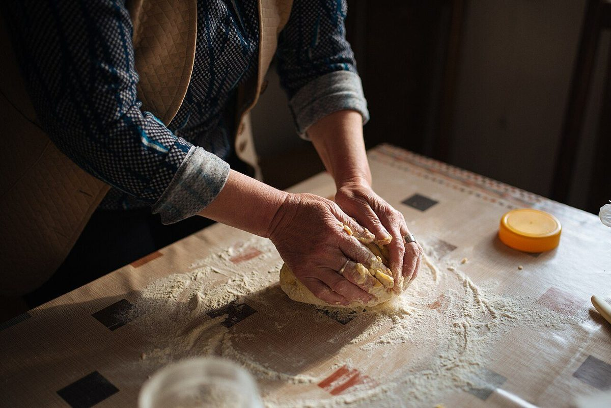

NAME
店名のこと
このページの文章は、店名から制作側が想像して書いたものです。店名の由来や「M」の意味など、お店から伺った内容ではありません。
Bake+Lab+M
- Bake
- 焼く。粉と水が、熱によってパンになること。
- Lab
- 研究室。試して、確かめて、また試す場所。
- M
- 何の頭文字かは、ここでは分かりません。お店の方に伺ってから載せたい部分です。
「焼く」と「研究室」。ふたつの言葉を並べると、毎日の仕事が小さな実験のくり返しのように思えてきます。生地の手ざわり、窯の温度、焼き上がりの色。その日の条件を見ながら、少しずつ答えに近づいていく。そんな姿を、制作側は思い描きました。



これから載せること
店主さんのこと、使っている素材のこと、パンづくりで大切にしていること。お店からお話を伺ったうえで、このページに書き加えます。